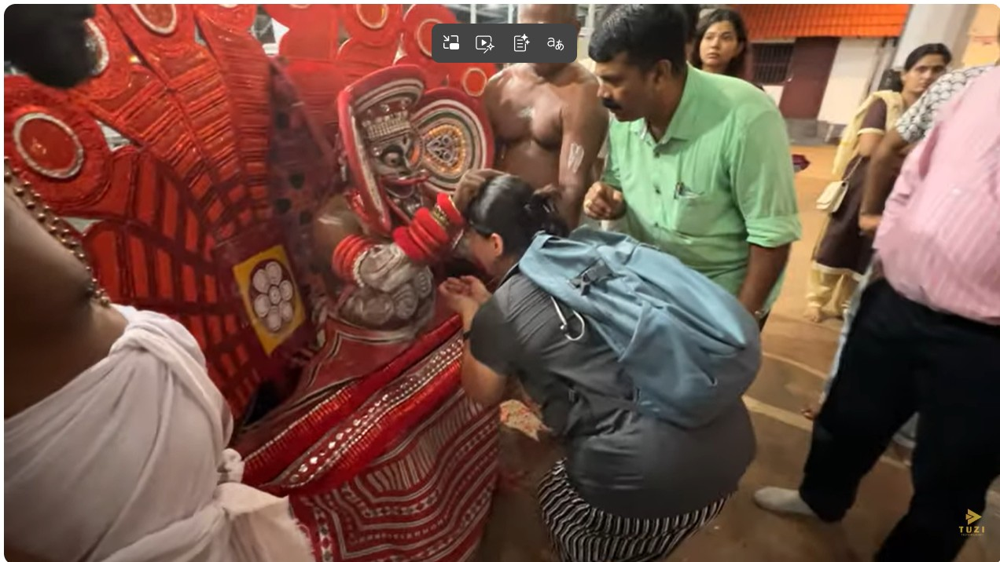

Real Story · 中文
这件事有一点 mystery。
我在 Coimbatore 的 parking lot 认识了 Mr. Shakthi 和 Mr. Manoj。 他们邀请我载他们一段，然后一起回去他们的 hometown Kerala。
现在想起来，其实有点 scary lah。 一个 solo woman traveller，在陌生国家，刚认识两个人，然后就跟着他们走。 可是那时候，我选择相信他们。
不是因为我有很完整的理由。 而是因为我感觉到他们身上有一种 aura。 那种感觉很难解释，但在路上，有时候你真的只能靠直觉判断。
后来，Mr. Manoj 带我们去他们平常会去的 temple。 那是我第一次知道这种神明形式，也第一次接触 Kalleri Kuttichathan Temple。
那里的氛围很特别。仪式、红色的服装、舞动的身体、神明与信众之间的距离， 都跟我过去熟悉的宗教经验不一样。
当时，神明对每个人说话时，都是靠近他们，很小声地 whisper， 因为很多人问的是自己的 personal issue。
可是轮到我的时候，我们还没有说什么。 神明突然握着我的手，用很大声的声音说：
“I know that you come from far to see. Don’t worry, I will be with you from now on.”
那一刻，我真的愣住。 因为我确实是从很远的地方来。 我也确实不知道，接下来这条路会把我带去哪里。
我不能解释这件事。 但我记得那只手，也记得那句话。
English Memory Summary
A meeting in a parking lot led to a temple Tuzi had never expected to visit.
Tuzi met Mr. Shakthi and Mr. Manoj at a parking lot in Coimbatore. They invited her to drive with them and return to their hometown in Kerala.
It was a situation that could have felt frightening, but Tuzi chose to trust them because of the aura she sensed from them. Later, Mr. Manoj brought her to a temple they often visited.
At Kalleri Kuttichathan Temple, Tuzi encountered a form of worship and ritual she had never known before. The deity figure whispered to most devotees, as they were speaking about personal matters.
But when it came to Tuzi, before she said anything, the deity figure held her hand and spoke loudly:
“I know that you come from far to see. Don’t worry, I will be with you from now on.”
Tuzi could not fully explain the moment, but she remembered the hand, the voice, and the feeling of protection.
Related Video
Kalleri Kuttichathan Temple in Villyappalli
Tuzi created a video about the temple, its rituals, and the mystical atmosphere she encountered there.
Heart Statement
有些路上的保护，是你解释不了的。
我不知道应该怎样解释那一刻。 我只知道，在一个我原本不会去的地方， 一个我原本不认识的神明形式， 对我说了一句我永远记得的话。
“I know that you come from far to see. Don’t worry, I will be with you from now on.”
那句话没有替我解决所有问题。 可是它在旅程开始不久的时候，给了我一种奇怪的安定。
Some protection on the road cannot be explained. It can only be remembered.